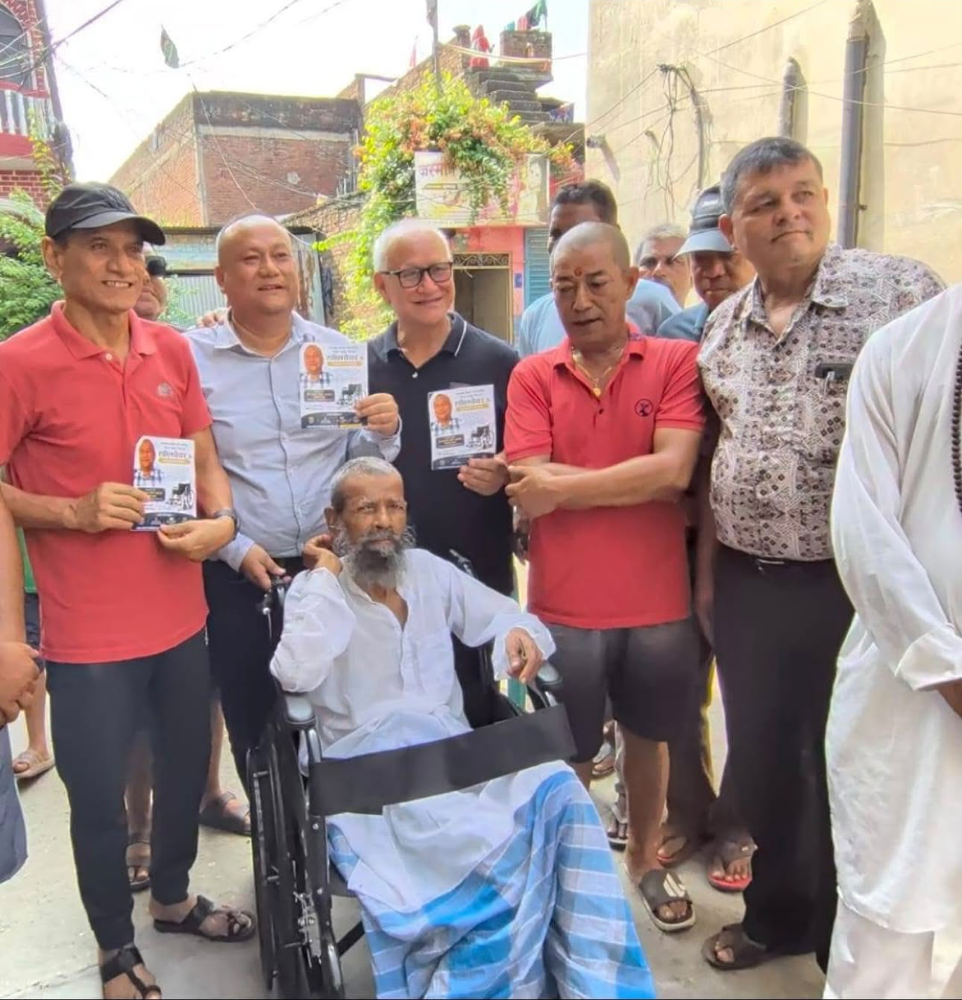

01
COMMUNITY SUPPORT
Supporting mobility & dignity.
Supporting individuals who need mobility assistance is a simple but meaningful way of helping someone move through everyday life with greater independence.